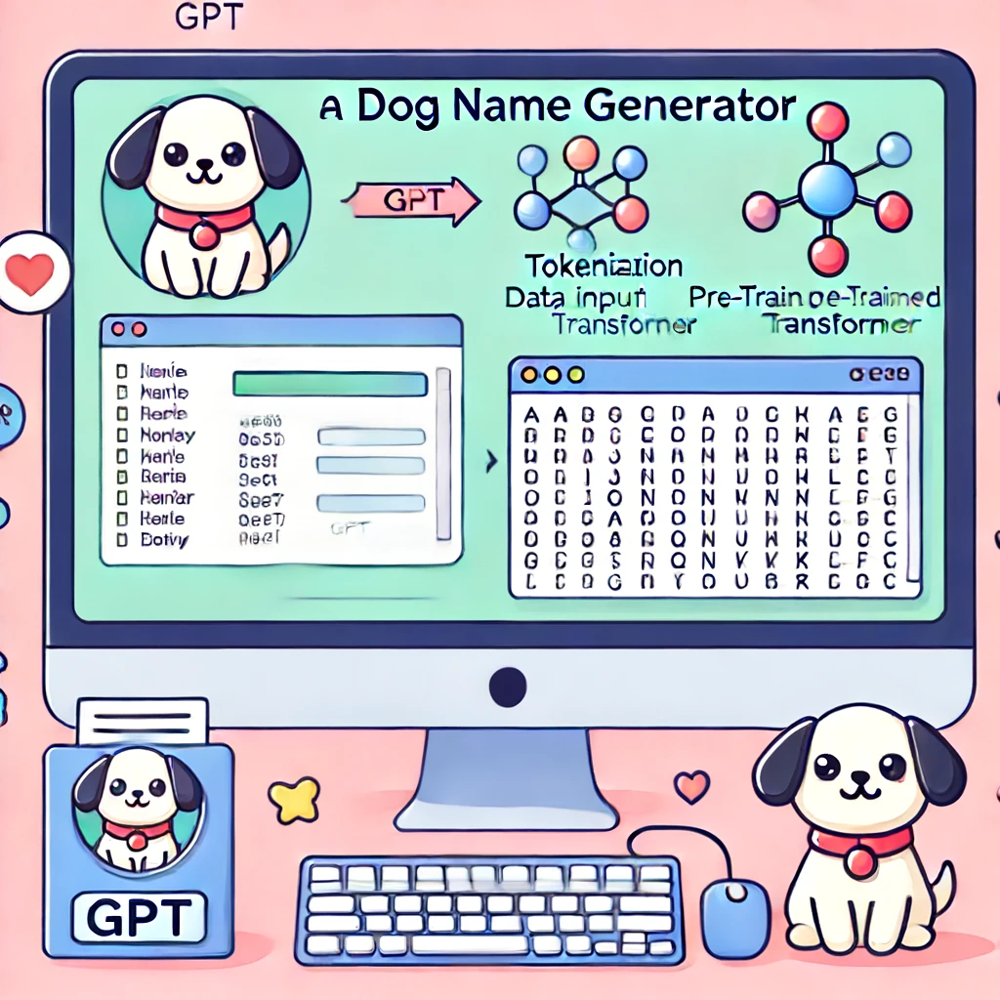

Transformer Model Architecture
This diagram represents the architecture of a Transformer model, which is a type of deep learning model commonly used for natural language processing tasks. Here is a detailed description of each step:
- Input Embedding: The raw input tokens (words) are converted into vectors of fixed size, known as embeddings. This step maps each word to a high-dimensional space where words with similar meanings are closer together.
- Positional Encoding: Since the Transformer model does not have a sense of word order, positional encodings are added to the input embeddings to provide information about the position of each word in the sequence. These encodings are added element-wise to the input embeddings.
- Add & Norm: This step involves adding the input (either embeddings or the output of the previous layer) to the output of a sub-layer (such as Multi-Head Attention or Feed Forward) and then normalizing the result. This helps stabilize and speed up the training process.
- Multi-Head Attention: This component allows the model to focus on different parts of the input sequence simultaneously. It uses multiple attention heads to capture different aspects of the relationships between words in the sequence. Each head performs an attention operation, and their outputs are concatenated and linearly transformed.
- Feed Forward: A fully connected feed-forward neural network is applied to each position separately and identically. This consists of two linear transformations with a ReLU activation in between.
- Add & Norm: Similar to the previous Add & Norm step, the output of the feed-forward network is added to the input and normalized.
- Masked Multi-Head Attention (Decoder Only): In the decoder, masked multi-head attention is used to ensure that each position can only attend to previous positions in the output sequence. This prevents the model from seeing future tokens during training, which is crucial for autoregressive generation.
- Add & Norm: The same Add & Norm step is applied after the masked multi-head attention.
- Multi-Head Attention (Decoder Only): The decoder also includes a regular multi-head attention layer, but it attends to the encoder's output sequence. This helps the decoder to generate the output sequence based on the encoded input sequence.
- Add & Norm: Again, the Add & Norm step is applied after the multi-head attention layer.
- Feed Forward (Decoder Only): The decoder includes a feed-forward neural network similar to the one in the encoder.
- Add & Norm: The final Add & Norm step is applied after the feed-forward network in the decoder.
- Linear & Softmax: The output of the last Add & Norm layer is fed into a linear transformation followed by a softmax function. The linear transformation maps the output to the vocabulary size, and the softmax function converts the scores into probabilities for each token in the vocabulary.
- Output Probabilities: The final output is a probability distribution over the vocabulary for each position in the output sequence, indicating the likelihood of each token being the correct next token in the sequence.
Dog Name Generator Using GPT Architecture
This webpage demonstrates constructing a Generative Pre-Trained Transformer to generate dog names.
The full Python script can be found in the GitHub repository: dog-name-GPT.py